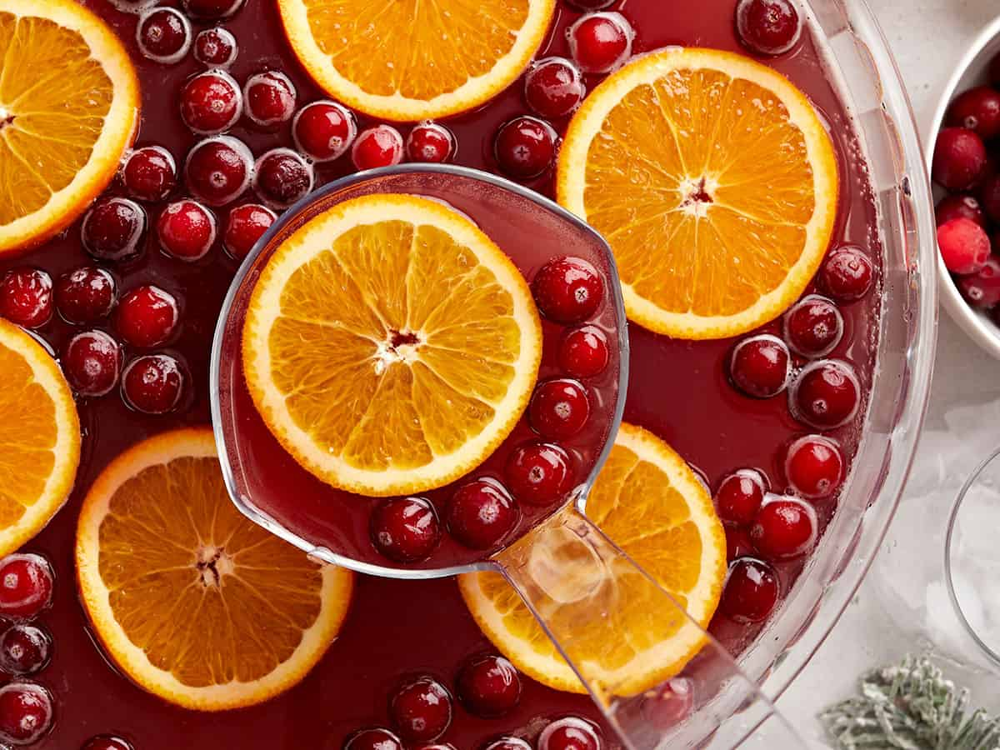

Punch:

Description:
A fast and easy punch to throw together without much prep time. Mix with
your favorite spirits for maximum enjoyment!
Ingredients
- 64 oz. 100% cranberry juice cocktail
- 32 oz. apple cider
- 2 L ginger ale
Steps
- Make sure the cranberry juice cocktail, apple cider, and ginger ale are fully chilled beforehand.
- Add the cranberry juice cocktail, apple cider, and ginger ale to a large punch bowl or drink dispenser.
- Add optional garnishes: orange slices, frozen cranberries, cinnamon sticks (cinnamon is nice to add per glass). To enjoy, ladle the punch over a glass full of ice, with or without your favorite alcoholic spirit.